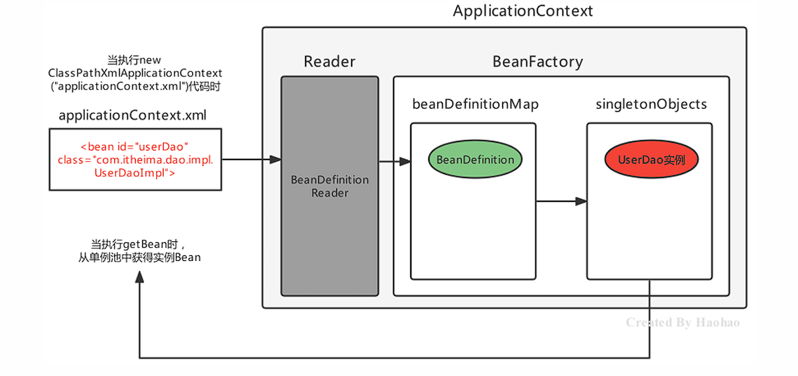
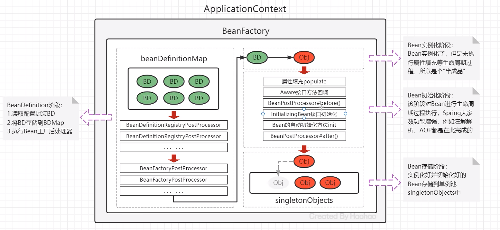

基于XML的Spring应用¶
常用配置¶
Spring开发中主要是对Bean的配置，Bean的常用配置一览如下：
| Xml配置方式 | 功能描述 |
|---|---|
<bean id="" class="" /> |
Bean的id和全限定名配置 |
<bean name="" /> |
通过name设置Bean的别名，通过别名也能直接获取到Bean实例 |
<bean scope="" /> |
Bean的作用范围，BeanFactory作为容器时取值singleton和prototype |
<bean lazy-init="" /> |
Bean的实例化时机，是否延迟加载。BeanFactory作为容器时无效 |
<bean init-method="" /> |
Bean实例化后自动执行的初始化方法，method指定方法名 |
<bean destroy-method="" /> |
Bean实例销毁前的方法，method指定方法名 |
<bean autowire="byType" /> |
设置自动注入模式，常用的有按照类型byType，按照名字byName |
<bean factory-bean="" factory-method="" /> |
指定哪个工厂Bean的哪个方法完成Bean的创建 |
注意
如果不配置id，则Spring会把当前Bean实例的全限定名作为beanName
Bean的别名配置¶
可以为当前Bean指定多个别名，根据别名也可以获得Bean对象此时多个名称都可以获得UserDaoImpl实例对象
<bean id="userDao" name="aaa,bbb" class="com.itheima.dao.impl.UserDaoImpl"/>
applicationContext.getBean("userDao");
applicationContext.getBean("aaa");
applicationContext.getBean("bbb");
Bean的范围配置¶
默认情况下，单纯的Spring环境Bean的作用范围有两个：singleton和prototype
-
singleton：单例，默认值，Spring容器创建的时候，就会进行Bean的实例化，并存储到容器内部的单例池中，每次getBean时都是从单例池中获取相同的Bean实例；
-
prototype：原型，Spring容器初始化时不会创建Bean实例，当调用getBean时才会实例化Bean，每次getBean都会创建一个新的Bean实例。
Bean的延迟加载¶
当lazy-init设置为true时为延迟加载，也就是当Spring容器创建的时候，不会立即创建Bean实例，等待用到时再创建Bean实例并存储到单例池中去，后续在使用该Bean直接从单例池获取即可，本质上该Bean还是单例的
<bean id="userDao" class="com.itheima.dao.impl.UserDaoImpl" lazy-init="true"/>
Bean的初始化和销毁方法配置¶
Bean在被实例化后，可以执行指定的初始化方法完成一些初始化的操作，Bean在销毁之前也可以执行指定的销毁方法完成一些操作，初始化方法名称和销毁方法名称通过init-method和destroy-method属性指定
<bean id="userDao" class="com.itheima.dao.impl.UserDaoImpl" init-method="init" destroy-method="destroy"/>
public class UserDaoImpl implements UserDao {
public UserDaoImpl() {
System.out.println("UserDaoImpl创建了...");
}
public void init(){
System.out.println("初始化方法...");
}
public void destroy(){
System.out.println("销毁方法...");
}
}
扩展
除此之外，我们还可以通过实现InitializingBean接口，完成一些Bean的初始化操作，如下：
public class UserDaoImpl implements UserDao, InitializingBean {
public UserDaoImpl() {
System.out.println("UserDaoImpl创建了...");
}
public void init() {
System.out.println("初始化方法...");
}
public void destroy() {
System.out.println("销毁方法...");
}
//执行时机早于init-method配置的方法
@Override
public void afterPropertiesSet() throws Exception {
System.out.println("InitializingBean...");
}
}
Bean的实例化配置¶
Spring的实例化方式主要如下两种：
-
构造方法实例化：底层通过构造方法对Bean进行实例化
-
工厂方式实例化：底层通过调用自定义的工厂方法对Bean进行实例化
构造方式实例化Bean又分为无参构造方法实例化和有参构造方法实例化，Spring中配置的几乎都是无参构造方式
有参构造在实例化Bean时，需要参数的注入，通过标签<constructor-arg>嵌入在标签内部提供构造参数，如下:
//有参构造方法
public UserDaoImpl(String name){
}
<bean id="userDao" class="com.itheima.dao.impl.UserDaoImpl">
<constructor-arg name="name" value="张三"/>
</bean>
工厂方式实例化Bean，又分为如下三种：
-
静态工厂方法实例化Bean
-
实例工厂方法实例化Bean
-
实现FactoryBean规范延迟实例化Bean
静态工厂方法实例化Bean，其实就是定义一个工厂类，提供一个静态方法用于生产Bean实例，再将该工厂类及其静态方法配置给Spring即可:
//工厂类
public class UserDaoFactoryBean {
//静态工厂方法
public static UserDao getUserDao(String name){
//可以在此编写一些其他逻辑代码
return new UserDaoImpl();
}
}
<bean id="userDao" class="com.itheima.factory.UserDaoFactoryBean" factory-method="getUserDao">
<constructor-arg name="name" value="张三"/>
</bean>
Tip
<constructor-arg>标签不仅仅是为构造方法传递参数，只要是为了实例化对象而传递的参数都可以通过标签完成，例如上面通过静态工厂方法实例化Bean所传递的参数也是要通过其进行传递的
实例工厂方法，也就是非静态工厂方法产生Bean实例，与静态工厂方式比较，该方式需要先有工厂对象，在用工厂对象去调用非静态方法，所以在进行配置时，要先配置工厂Bean，再配置目标Bean
//工厂类
public class UserDaoFactoryBean2 {
//非静态工厂方法
public UserDao getUserDao(String name){
//可以在此编写一些其他逻辑代码
return new UserDaoImpl();
}
}
<!-- 配置实例工厂Bean -->
<bean id="userDaoFactoryBean2" class="com.itheima.factory.UserDaoFactoryBean2"/>
<bean id="userDao" factory-bean="userDaoFactoryBean2" factory-method="getUserDao">
<!-- 配置实例工厂Bean的哪个方法作为工厂方法-->
<constructor-arg name="name" value="haohao"/>
</bean>
Spring提供了FactoryBean的接口规范，FactoryBean接口定义如下：
public interface FactoryBean<T> {
String OBJECT_TYPE_ATTRIBUTE = “factoryBeanObjectType”;
T getObject() throws Exception; //获得实例对象方法
Class<?> getObjectType(); //获得实例对象类型方法
default boolean isSingleton() {
return true;
}
}
实现自定义工厂后，配置FactoryBean交由Spring管理即可
<!--配置自定义工厂-->
<bean class="org.example.factory.MyBeanFactory" id="userDao3"/>
Info
通过断点观察发现Spring容器创建时，FactoryBean被实例化了，并存储到了单例池singletonObjects中，但是getObject() 方法尚未被执行，UserDaoImpl也没被实例化，当首次用到UserDaoImpl时，才调用getObject() ，此工厂方式产生的Bean实例不会存储到单例池singletonObjects中，会存储到 factoryBeanObjectCache 缓存池 中，并且后期每次使用到userDao都从该缓存池中返回的是同一个userDao实例。
Bean的依赖注入配置¶
Bean的依赖注入有两种方式：
| 注入方式 | 配置方式 |
|---|---|
| 通过Bean的set方法注入 | <property name="userDao" ref="userDao"/><property name="user" value="haohao"/> |
| 通过构造Bean的方法进行注入 | <constructor-arg name="userDao" ref="userDao"/><constructor-arg name="user" value="haohao"/> |
Info
其中，ref 是 reference 的缩写形式，翻译为：涉及，参考的意思，用于引用其他Bean的id。value 用于注入普通属性值。
依赖注入的数据类型有如下三种：
-
普通数据类型，例如：
String、int、boolean等，通过value属性指定。 -
引用数据类型，例如：
UserDaoImpl、DataSource等，通过ref属性指定。 -
集合数据类型，例如：
List、Map、Properties等。
注入List<T>集合– 普通数据
void setStrList(List<String> strList){
strList.forEach(str->{
System.out.println(str);
});
}
<property name="strList">
<list>
<value>haohao</value>
<value>miaomiao</value>
</list>
</property>
注入
List <T>集合–引用数据
public void setObjList(List<UserDao> objList){
objList.forEach(obj->{
System.out.println(obj);
});
}
<property name="objList">
<list>
<bean class="com.itheima.dao.impl.UserDaoImpl"></bean>
<bean class="com.itheima.dao.impl.UserDaoImpl"></bean>
<bean class="com.itheima.dao.impl.UserDaoImpl"></bean>
</list>
</property>
Tip
也可以直接引用容器中存在的Bean，class的值为bean的id
注入Set<T>集合
只需将<list>标签改为<set>即可
注入Map<K,V>集合
<!--注入值为字符串的Map集合-->
<property name="valueMap">
<map>
<entry key="aaa" value="AAA" />
<entry key="bbb" value="BBB" />
<entry key="ccc" value="CCC" />
</map>
</property>
<!--注入值为对象的Map集合-->
<property name="objMap">
<map>
<entry key="ud" value-ref="userDao"/>
<entry key="ud2" value-ref="userDao2"/>
<entry key="ud3" value-ref="userDao3"/>
</map>
</property>
注入Properties 键值对
<property name="properties">
<props>
<prop key="xxx">XXX</prop>
<prop key="yyy">YYY</prop>
</props>
</property>
扩展：自动装配方式
如果被注入的属性类型是Bean引用的话，那么可以在 标签中使用autowire属性去配置自动注入方式，属性值有两个：
-
byName：通过属性名自动装配，即去匹配setXxx与id="xxx"（name="xxx"）是否一致； -
byType：通过Bean的类型从容器中匹配，匹配出多个相同Bean类型时，报错。
Spring的其他配置标签¶
Spring 的 xml 标签大体上分为两类，一种是默认标签，一种是自定义标签
-
默认标签：就是不用额外导入其他命名空间约束的标签，例如
<bean>标签 -
自定义标签：就是需要额外引入其他命名空间约束，并通过前缀引用的标签，例如
<context:propertyplaceholder>标签
<beans>标签，除了经常用的做为根标签外，还可以嵌套在根标签内，使用profile属性切换开发环境
<!-- 配置测试环境下，需要加载的Bean实例-->
<beans profile="test">
</beans>
<!-- 配置开发环境下，需要加载的Bean实例-->
<beans profile="dev">
</beans>
Note
可以使用以下两种方式指定被激活的环境：
-
使用命令行动态参数，虚拟机参数位置加载
-Dspring.profiles.active=test -
使用代码的方式设置环境变量
System.setProperty("spring.profiles.active","test")
<import>标签，用于导入其他配置文件，项目变大后，就会导致一个配置文件内容过多，可以将一个配置文件根据业务某块进行拆分，拆分后，最终通过标签导入到一个主配置文件中，项目加载主配置文件就连同导入的文件一并加载了
<!--导入用户模块配置文件-->
<import resource="classpath:UserModuleApplicationContext.xml"/>
<!--导入商品模块配置文件-->
<import resource="classpath:ProductModuleApplicationContext.xml"/>
<alias>标签是为某个Bean添加别名，与在标签上使用name属性添加别名的方式一样，我们为UserServiceImpl指定四个别名：aaa、bbb、xxx、yyy
<!--配置UserService-->
<bean id="userService" name="aaa,bbb" class="com.itheima.service.impl.UserServiceImpl">
<property name="userDao" ref="userDao"/>
</bean>
<!--指定别名-->
<alias name="userService" alias="xxx"/>
<alias name="userService" alias="yyy"/>
Spring的自定义标签需要引入外部的命名空间，并为外部的命名空间指定前缀，使用<前缀:标签> 形式的标签，称之为自定义标签，自定义标签的解析流程也是Spring xml扩展点方式之一
<!--默认标签-->
<bean id="userDao" class="com.itheima.dao.impl.UserDaoImpl"/>
<!--自定义标签-->
<context:property-placeholder/>
<mvc:annotation-driven/>
<dubbo:application name="application"/>
Spring 的get方法¶
| 方法定义 | 返回值和参数 |
|---|---|
Object getBean(String beanName) |
根据beanName从容器中获取Bean实例，要求容器中Bean唯一，返回值为Object，需要强转 |
T getBean (Class type) |
根据Class类型从容器中获取Bean实例，要求容器中Bean类型唯一，返回值为Class类型实例，无需强转 |
T getBean (String beanName，Class type) |
根据beanName从容器中获得Bean实例，返回值为Class类型实例，无需强转 |
//根据beanName获取容器中的Bean实例，需要手动强转
UserService userService = (UserService) applicationContext.getBean("userService");
//根据Bean类型去容器中匹配对应的Bean实例，如存在多个匹配Bean则报错
UserService userService2 = applicationContext.getBean(UserService.class);
//根据beanName获取容器中的Bean实例，指定Bean的Type类型
UserService userService3 = applicationContext.getBean("userService", UserService.class);
Spring 配置非自定义Bean¶
以上在xml 中配置的Bean都是自己定义的，例如：UserDaoImpl，UserServiceImpl。但是，在实际开发中有些功能类并不是我们自己定义的，而是使用的第三方jar包中的，这些Bean要想让Spring进行管理，也需要对其进行配置
配置非自定义的Bean需要考虑如下两个问题：
-
被配置的Bean的实例化方式是什么？无参构造、有参构造、静态工厂方式还是实例工厂方式；
-
被配置的Bean是否需要注入必要属性。
Example
配置Druid 数据源交由Spring管理
- 导入Druid坐标（Maven）
- 配置数据源
<!--配置 DruidDataSource数据源-->
<bean class="com.alibaba.druid.pool.DruidDataSource">
<!--配置必要属性-->
<property name="driverClassName" value="com.mysql.cj.jdbc.Driver"/>
<property name="url" value="jdbc://localhost:3306/mybatis"/>
<property name="username" value="root"/>
<property name="password" value="root"/>
</bean>
配置Connection交由Spring管理
- Connection的产生是通过DriverManager的静态方法getConnection获取的，所以我们要用静态工厂方式配置
<bean id="clazz" class="java.lang.Class" factory-method="forName">
<constructor-arg name="className" value="com.mysql.cj.jdbc.Driver"/>
</bean>
<bean id="connection" class="java.sql.DriverManager" factory-method="getConnection" scope="prototype">
<constructor-arg name="url" value="jdbc:mysql://localhost:3306/blog"/>
<constructor-arg name="user" value="root"/>
<constructor-arg name="password" value="123"/>
</bean>
配置日期对象交由Spring管理
<bean id="simpleDateFormat" class="java.text.SimpleDateFormat">
<constructor-arg name="pattern" value="yyyy-MM-dd HH:mm:ss"/>
</bean>
<bean id="date" class="java.util.Date" factory-bean="simpleDateFormat" factory-method="parse">
<constructor-arg value="2021-01-01 12:00:00"/>
</bean>
Bean 实例化的基本流程¶
Spring容器在进行初始化时，会将xml配置的的信息封装成一个BeanDefinition对象
所有的BeanDefinition存储到一个名为beanDefinitionMap的Map集合中去
Spring框架再对该Map进行遍历，使用反射创建Bean实例对象存储在一个名为singletonObjects的Map集合中
当调用getBean方法时则最终从该Map集合中取出Bean实例对象返回。

Spring的后处理器¶
Spring的后处理器是Spring对外开发的重要扩展点，允许我们介入到Bean的整个实例化流程中来，以达到动态注册BeanDefinition，动态修改BeanDefinition，以及动态修改Bean的作用。
Spring主要有两种后处理器：
-
BeanFactoryPostProcessor：Bean工厂后处理器，在BeanDefinitionMap填充完毕，Bean实例化之前执行； -
BeanPostProcessor：Bean后处理器，一般在Bean实例化之后，填充到单例池singletonObjects之前执行。
Bean工厂后处理器–BeanFactoryPostProcessor
BeanFactoryPostProcessor是一个接口规范，实现了该接口的类只要交由Spring容器管理的话，那么Spring就会回调该接口的方法，用于对BeanDefinition注册和修改的功能。
@FunctionalInterface
public interface BeanFactoryPostProcessor {
void postProcessBeanFactory(ConfigurableListableBeanFactory var1) throws BeansException;
}
postProcessBeanFactory 参数本质就是 DefaultListableBeanFactory
拿到BeanFactory的引用，自然就可以对beanDefinitionMap中的BeanDefinition进行操作
<bean class="org.example.processor.MyBeanFactoryProcessor"/>
public class MyBeanFactoryProcessor implements BeanFactoryPostProcessor {
@Override
public void postProcessBeanFactory(ConfigurableListableBeanFactory configurableListableBeanFactory) throws BeansException {
System.out.println("MyBeanFactoryProcessor 被调用!");
// 这里可以对BeanFactory做一些操作，比如添加Bean、修改Bean等
BeanDefinition beanDefinition = configurableListableBeanFactory.getBeanDefinition("userService2");
beanDefinition.setBeanClassName("org.example.dao.impl.UserDaoImpl");
}
}
Note
Spring 提供了一个BeanFactoryPostProcessor的子接口BeanDefinitionRegistryPostProcessor专门用于注册BeanDefinition操作
public class MyBeanFactoryPostProcessor2 implements BeanDefinitionRegistryPostProcessor {
@Override
public void postProcessBeanFactory(ConfigurableListableBeanFactory configurableListableBeanFactory) throws BeansException {}
@Override
public void postProcessBeanDefinitionRegistry(BeanDefinitionRegistry beanDefinitionRegistry) throws BeansException {
BeanDefinition beanDefinition = new RootBeanDefinition();
beanDefinition.setBeanClassName("com.itheima.dao.UserDaoImpl2");
beanDefinitionRegistry.registerBeanDefinition("userDao2",beanDefinition);
}
}
案例：使用Spring的BeanFactoryPostProcessor扩展点完成自定义注解扫描¶
要求如下：
-
自定义@MyComponent注解，使用在类上；
-
使用包扫描器工具 BaseClassScanUtils 完成指定包的类扫描；
-
自定义BeanFactoryPostProcessor完成注解@MyComponent的解析，解析后最终被Spring管理。
自定义@MyComponent注解，使用在类上
@Target(ElementType.TYPE)
@Retention(RetentionPolicy.RUNTIME)
public @interface MyComponent {
String value() default "";
}
在类上使用@MyComponent
@MyComponent("myBean")
public class TestBean {
}
自定义BeanFactoryPostProcessor完成注解解析
public class MyComponentFactory implements BeanDefinitionRegistryPostProcessor {
@Override
public void postProcessBeanDefinitionRegistry(BeanDefinitionRegistry beanDefinitionRegistry) throws BeansException {
// 扫描并注册组件
// 注册组件的BeanDefinition
Map<String, Class> myComponents = BeanScanUtil.scanMyComponentAnnotation("org.example");
myComponents.forEach((beanName,clazz)->{
String className = clazz.getName();
BeanDefinition beanDefinition = new RootBeanDefinition();
beanDefinition.setBeanClassName(className);
beanDefinitionRegistry.registerBeanDefinition(beanName, beanDefinition);
});
}
@Override
public void postProcessBeanFactory(ConfigurableListableBeanFactory configurableListableBeanFactory) throws BeansException {
}
}
public class BeanScanUtil {
//设置资源规则
private static final String RESOURCE_PATTERN = "/**/*.class";
public static Map<String, Class> scanMyComponentAnnotation(String basePackage) {
//创建容器存储使用了指定注解的Bean字节码对象
Map<String, Class> annotationClassMap = new HashMap<String, Class>();
//spring工具类，可以获取指定路径下的全部类
ResourcePatternResolver resourcePatternResolver = new PathMatchingResourcePatternResolver();
try {
String pattern = ResourcePatternResolver.CLASSPATH_ALL_URL_PREFIX +
ClassUtils.convertClassNameToResourcePath(basePackage) + RESOURCE_PATTERN;
Resource[] resources = resourcePatternResolver.getResources(pattern);
//MetadataReader 的工厂类
MetadataReaderFactory refractory = new CachingMetadataReaderFactory(resourcePatternResolver);
for (Resource resource : resources) {
//用于读取类信息
MetadataReader reader = refractory.getMetadataReader(resource);
//扫描到的class
String classname = reader.getClassMetadata().getClassName();
Class<?> clazz = Class.forName(classname);
//判断是否属于指定的注解类型
if (clazz.isAnnotationPresent(MyComponent.class)) {
//获得注解对象
MyComponent annotation = clazz.getAnnotation(MyComponent.class);
//获得属value属性值
String beanName = annotation.value();
//判断是否为""
if (beanName != null && !beanName.equals("")) {
//存储到Map中去
annotationClassMap.put(beanName, clazz);
continue;
}
//如果没有为"",那就把当前类的类名作为beanName
annotationClassMap.put(clazz.getSimpleName(), clazz);
}
}
} catch (Exception exception) {
}
return annotationClassMap;
}
}
Bean后处理器–BeanPostProcessor
Bean被实例化后，到最终缓存到名为singletonObjects单例池之前，中间会经过Bean的初始化过程
例如：属性的填充、初始方法init的执行等，其中有一个对外进行扩展的点BeanPostProcessor，我们称为Bean后处理。
跟上面的Bean工厂后处理器相似，它也是一个接口，实现了该接口并被容器管理的BeanPostProcessor，会在流程节点上被Spring自动调用。
public interface BeanPostProcessor {
//在属性注入完毕，init初始化方法执行之前被回调
@Nullable
default Object postProcessBeforeInitialization(Object bean, String beanName) throws BeansException {
return bean;
}
//在初始化方法执行之后，被添加到单例池singletonObjects之前被回调
@Nullable
default Object postProcessAfterInitialization(Object bean, String beanName) throws BeansException {
return bean;
}
}
案例：对Bean方法进行执行时间日志增强¶
要求如下：
-
Bean的方法执行之前控制台打印当前时间；
-
Bean的方法执行之后控制台打印当前时间。
分析：
-
对方法进行增强主要就是代理模式和包装模式；
-
由于Bean方法不确定，所以使用动态代理在运行期间执行增强操作；
-
在Bean实例创建完毕后，进入到单例池之前，使用Proxy代替真实的目标Bean
编写BeanPostProcessor，增强逻辑编写在after方法中：
public class TImeLogBeanPostProcessor implements BeanPostProcessor {
@Override
public Object postProcessAfterInitialization(Object bean, String beanName) throws BeansException {
// 使用动态代理对目标BEan进行增强，返回proxy对象
return Proxy.newProxyInstance(
bean.getClass().getClassLoader(),
bean.getClass().getInterfaces(),
(proxy, method, args) -> {
// 输出开始时间
System.out.println("执行方法：" + method.getName() + "--开始时间：" + new Date());
// 执行目标方法
Object result = method.invoke(bean, args);
// 输出结束时间
System.out.println("方法结束：" + method.getName() + "--结束时间：" + new Date());
return result;
}
);
}
}
Spring Bean的生命周期¶
Spring Bean的生命周期是从 Bean 实例化之后，即通过反射创建出对象之后，到Bean成为一个完整对象，最终存储到单例池中，这个过程被称为Spring Bean的生命周期。
Spring Bean的生命周期大体上分为三个阶段：
-
Bean的实例化阶段：Spring框架会取出BeanDefinition的信息进行判断当前Bean的范围是否是singleton的，是否延迟加载的，是否FactoryBean等，最终将一个普通的singleton的Bean通过反射进行实例化；
-
Bean的初始化阶段：Bean创建之后还仅仅是个"半成品"，还需要对Bean实例的属性进行填充、执行一些Aware接口方法、执行BeanPostProcessor方法、执行InitializingBean接口的初始化方法、执行自定义初始化init方法等。该阶段是Spring最具技术含量和复杂度的阶段，Aop增强功能，后面要学习的Spring的注解功能等、spring高频面试题Bean的循环引用问题都是在这个阶段体现的；
-
Bean的完成阶段：经过初始化阶段，Bean就成为了一个完整的Spring Bean，被存储到单例池singletonObjects中去了，即完成了Spring Bean的整个生命周期。
Spring Bean的初始化过程涉及如下几个过程：
-
Bean实例的属性填充
-
Aware接口属性注入
-
BeanPostProcessor的before()方法回调
-
InitializingBean接口的初始化方法回调
-
自定义初始化方法init回调
-
BeanPostProcessor的after()方法回调
Bean实例属性填充¶
BeanDefinition 中有对当前Bean实体的注入信息通过属性propertyValues进行了存储
Spring在进行属性注入时，会分为如下几种情况：
-
注入普通属性，String、int或存储基本类型的集合时，直接通过set方法的反射设置进去；
-
注入单向对象引用属性时，从容器中getBean获取后通过set方法反射设置进去，如果容器中没有，则先创建被注入对象Bean实例（完成整个生命周期）后，再进行注入操作；
-
注入双向对象引用属性时，就比较复杂了，涉及了循环引用（循环依赖）问题，下面会详细阐述解决方案。
多个实体之间相互依赖并形成闭环的情况就叫做"循环依赖"，也叫做"循环引用":

解决循环引用¶
Spring提供了三级缓存存储完整Bean实例和半成品Bean实例，用于解决循环引用问题
在DefaultListableBeanFactory的上四级父类DefaultSingletonBeanRegistry中提供如下三个Map：
public class DefaultSingletonBeanRegistry ... {
//1、最终存储单例Bean成品的容器，即实例化和初始化都完成的Bean，称之为"一级缓存"
Map<String, Object> singletonObjects = new ConcurrentHashMap(256);
//2、早期Bean单例池，缓存半成品对象，且当前对象已经被其他对象引用了，称之为"二级缓存"
Map<String, Object> earlySingletonObjects = new ConcurrentHashMap(16);
//3、单例Bean的工厂池，缓存半成品对象，对象未被引用，使用时再通过工厂创建Bean，称之为"三级缓存"
Map<String, ObjectFactory<?>> singletonFactories = new HashMap(16);
}
UserService和UserDao循环依赖的过程结合上述三级缓存描述如下：
-
UserService 实例化对象，但尚未初始化，将UserService存储到三级缓存；
-
UserService 属性注入，需要UserDao，从缓存中获取，没有UserDao；
-
UserDao实例化对象，但尚未初始化，将UserDao存储到到三级缓存；
-
UserDao属性注入，需要UserService，从三级缓存获取UserService，UserService从三级缓存移入二级缓存；
-
UserDao执行其他生命周期过程，最终成为一个完成Bean，存储到一级缓存，删除二三级缓存；
-
UserService 注入UserDao；
-
UserService执行其他生命周期过程，最终成为一个完成Bean，存储到一级缓存，删除二三级缓存。
常用的Aware接口¶
Aware接口是一种框架辅助属性注入的一种思想，其他框架中也可以看到类似的接口。框架具备高度封装性，我们接触到的一般都是业务代码，一个底层功能API不能轻易的获取到，但是这不意味着永远用不到这些对象，如果用到了，就可以使用框架提供的类似Aware的接口，让框架为我们注入该对象。
| Aware接口 | 回调接口 | 作用 |
|---|---|---|
ServletContextAware |
setServletContext(ServletContext context) |
Spring框架回调方法注入ServletContext对象，web环境下才生效 |
BeanFactoryAware |
setBeanFactory(BeanFactory factory) |
Spring框架回调方法注入beanFactory对象 |
BeanNameAware |
setBeanName(String beanName) |
Spring框架回调方法注入当前Bean在容器中的beanName |
ApplicationContextAware |
setApplicationContext(ApplicationContext applicationContext) |
Spring框架回调方法注入applicationContext对象 |
一图总结¶

整合第三方框架¶
xml整合第三方框架有两种整合方案：
-
不需要自定义名空间，不需要使用Spring的配置文件配置第三方框架本身内容，例如：MyBatis；
-
需要引入第三方框架命名空间，需要使用Spring的配置文件配置第三方框架本身内容，例如：Dubbo。
整合MyBatis¶
MyBatis提供了mybatis-spring.jar专门用于两大框架的整合。
Spring整合MyBatis的步骤如下：
-
导入MyBatis整合Spring的相关坐标；
-
编写Mapper和Mapper.xml；
-
配置SqlSessionFactoryBean和MapperScannerConfigurer；
-
编写测试代码
<!--配置数据源-->
<bean id="dataSource" class="com.alibaba.druid.pool.DruidDataSource">
<property name="url" value="jdbc:mysql://localhost:3306/mybatis"></property>
<property name="username" value="root"></property>
<property name="password" value="root"></property>
</bean>
<!--配置SqlSessionFactoryBean-->
<bean class="org.mybatis.spring.SqlSessionFactoryBean">
<property name="dataSource" ref="dataSource"></property>
</bean>
<!--配置Mapper包扫描,会自动将mapper注册为BeanDefinition-->
<bean class="org.mybatis.spring.mapper.MapperScannerConfigurer">
<property name="basePackage" value="com.itheima.dao"></property>
</bean>
Spring整合MyBatis的原理剖析
整合包里提供了一个SqlSessionFactoryBean和一个扫描Mapper的配置对象，SqlSessionFactoryBean一旦被实例化，就开始扫描Mapper并通过动态代理产生Mapper的实现类存储到Spring容器中。相关的有如下四个类：
-
SqlSessionFactoryBean：需要进行配置，用于提供SqlSessionFactory；
-
MapperScannerConfigurer：需要进行配置，用于扫描指定mapper注册BeanDefinition；
-
MapperFactoryBean：Mapper的FactoryBean，获得指定Mapper时调用getObject方法；
-
ClassPathMapperScanner：definition.setAutowireMode(2) 修改了自动注入状态，所以MapperFactoryBean中的setSqlSessionFactory会自动注入进去。
PS：autowireMode取值：1是根据名称自动装配，2是根据类型自动装配
配置SqlSessionFactoryBean作用是向容器中提供SqlSessionFactory，SqlSessionFactoryBean实现了FactoryBean和InitializingBean两个接口，所以会自动执行getObject() 和afterPropertiesSet()方法
SqlSessionFactoryBean implements FactoryBean<SqlSessionFactory>, InitializingBean{
public void afterPropertiesSet() throws Exception {
//创建SqlSessionFactory对象
this.sqlSessionFactory = this.buildSqlSessionFactory();
}
public SqlSessionFactory getObject() throws Exception {
return this.sqlSessionFactory;
}
}
配置MapperScannerConfigurer作用是扫描Mapper，向容器中注册Mapper对应的MapperFactoryBean，MapperScannerConfigurer实现了BeanDefinitionRegistryPostProcessor和InitializingBean两个接口，会在postProcessBeanDefinitionRegistry方法中向容器中注册MapperFactoryBean
class MapperScannerConfigurer implements BeanDefinitionRegistryPostProcessor, InitializingBean{
public void postProcessBeanDefinitionRegistry(BeanDefinitionRegistry registry) {
ClassPathMapperScanner scanner = new ClassPathMapperScanner(registry);
}
}
其他框架¶
以Spring的context 命名空间为例，该方式是命名空间扩展方式。
需求：加载外部properties文件，将键值对存储在Spring容器中
jdbc.url=jdbc:mysql://localhost:3306/mybatis
jdbc.username=root
jdbc.password=root
引入context命名空间，在使用context命名空间的标签，使用SpEL表达式在xml或注解中根据key获得value
<beans xmlns="http://www.springframework.org/schema/beans"
xmlns:context="http://www.springframework.org/schema/context"
xmlns:xsi="http://www.w3.org/2001/XMLSchema-instance"
xsi:schemaLocation="http://www.springframework.org/schema/beans
http://www.springframework.org/schema/beans/spring-beans.xsd
http://www.springframework.org/schema/context
http://www.springframework.org/schema/context/spring-context.xsd">
<context:property-placeholder location="classpath:jdbc.properties"/>
<bean id="dataSource" class="com.alibaba.druid.pool.DruidDataSource">
<property name="url" value="${jdbc.url}"></property>
<property name="username" value="${jdbc.username}"></property>
<property name="password" value="${jdbc.password}"></property>
</bean>
</beans>
某一个框架与Spring的集成开发¶
步骤分析：
- 确定命名空间名称、schema虚拟路径、标签名称；
- 编写schema约束文件
xxx-annotation.xsd - 在类加载路径下创建META目录，编写约束映射文件
spring.schemas和处理器映射文件spring.handlers - 编写命名空间处理器
XXXNamespaceHandler，在init方法中注册XXXBeanDefinitionParser - 编写标签的解析器
XXXBeanDefinitionParser，在parse方法中注册XXXBeanPostProcessor - 编写
XXXBeanPostProcessor
==========以上五步是框架开发者要做的，下面是框架使用者要做的===========
-
在
applicationContext.xml配置文件中引入命名空间 -
在
applicationContext.xml配置文件中使用自定义的标签
上一节： 概述
下一节： 基于注解的Spring应用